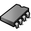

VirtualMemory
| Deskbar: | Preferences | |
| Location: | /boot/beos/preferences/VirtualMemory | |
| Settings: | ~/config/settings/kernel/drivers/virtual_memory ~/config/settings/VM_data - Stores the panel's window position. |
Virtual memory let's the system swap out memory to harddisk, if the RAM can be used more sensibly for other things. So, even if you have lots of RAM, providing virtual memory is never a bad idea.

You can set the size to even more than your physical memory size if needed. With today's huge harddisks, assigning the physical memory size shouldn't be a problem. Still, you can quickly adjust the size if your free space ever runs low. In that case you should also have a look at DiskUsage to find out what's eating up your diskspace.
Normally, the swap file's written to your boot partition. If you often run into disk thrashing due to the virtual memory system swapping memory in and out, you can try to use a separate harddisk for you swap file. Simply another partition on the same harddisk with your system/data won't help.
Upgrading your RAM is of course the most effective way to go...
| Defaults | resets everything to default values. | |
| Revert | brings back the settings that were active when you started the VirtualMemory preferences. |